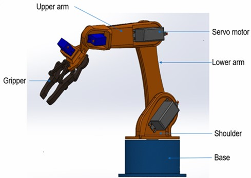
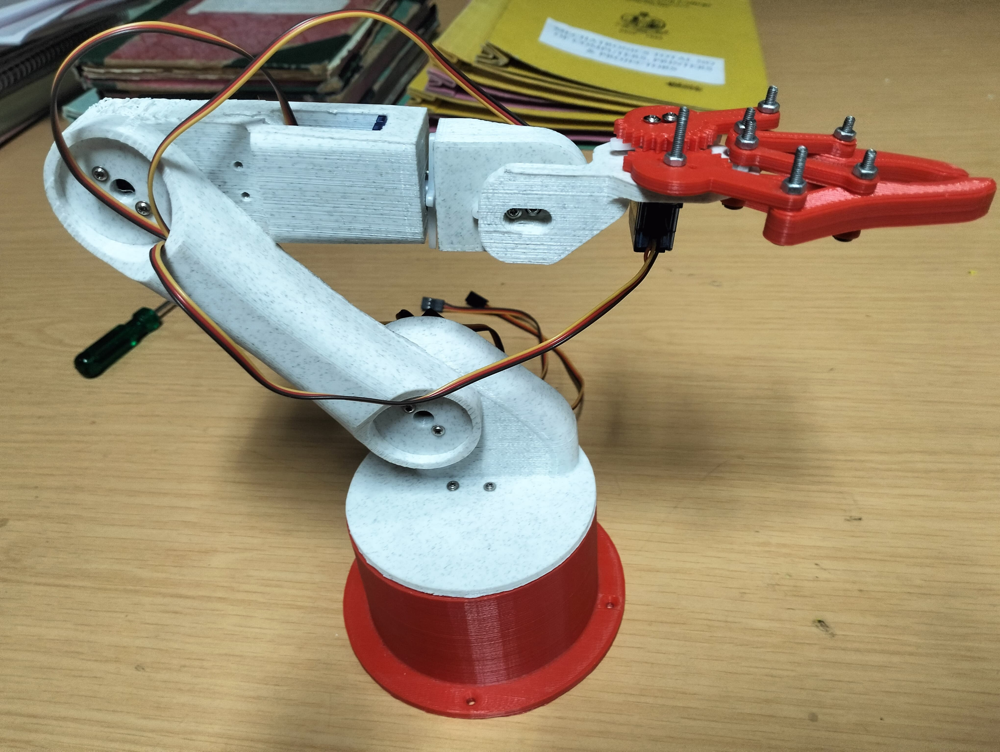
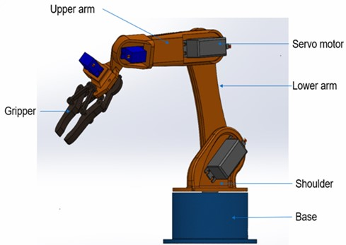
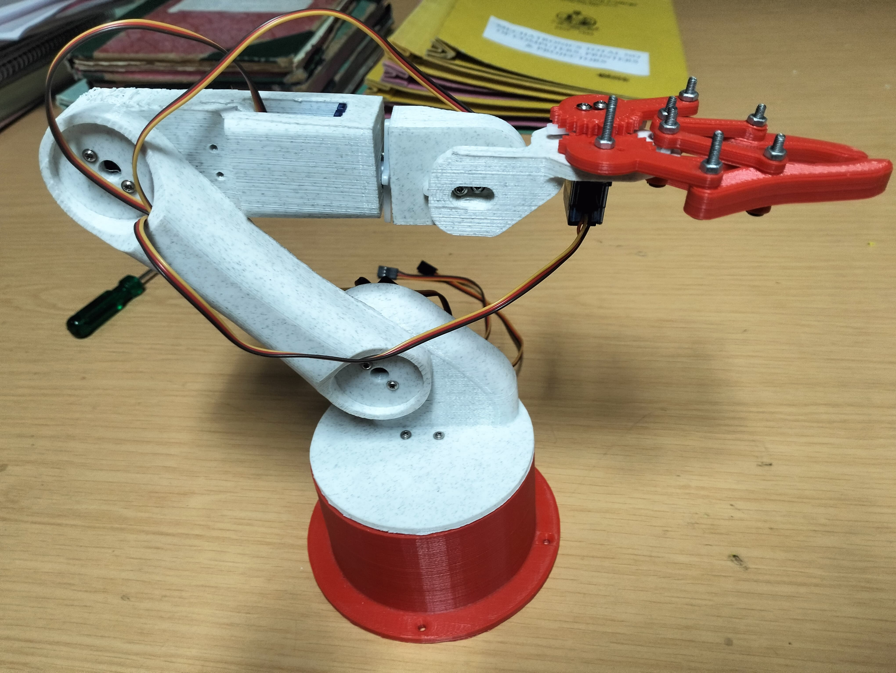

🏠 Product and Output
The gesture-controlled robotic arm was evaluated under multiple test conditions to measure its accuracy, responsiveness, and reliability. Testing focused on correct gesture interpretation, servo precision, communication latency, and consistent performance over extended use. The system achieved an average gesture recognition accuracy of 95%, with reliable detection of finger bending across various hand sizes after minor calibration. The MPU6050 sensor accurately tracked wrist orientation, enabling intuitive control of arm tilt and rotation.

Real-time gesture recognition and motor response were achieved with minimal delay, averaging under 30 milliseconds using the ESP-NOW protocol. The robotic arm successfully performed tasks such as picking, rotating, and positioning lightweight objects at predefined locations. MG995 servos provided adequate torque for smooth base and shoulder movement, while SG90 micro servos managed finer motions in the wrist and gripper. Minor oscillations were observed during rapid movements, mostly due to limitations of the smaller servos.

The system proved stable during continuous operation, maintaining signal quality and sensor data consistency for over 30 minutes. Its modular structure also simplified hardware adjustments and part replacement during troubleshooting. As the design relies on sensor input rather than vision systems, performance remained largely unaffected by external factors like ambient lighting or electromagnetic interference. Some minor signal noise was noted in the flex sensor output, which could be mitigated in future versions with enhanced filtering or smoothing algorithms.

Real-time gesture recognition and motor response were achieved with minimal delay, averaging under 30 milliseconds using the ESP-NOW protocol. The robotic arm successfully performed tasks such as picking, rotating, and positioning lightweight objects at predefined locations. MG995 servos provided adequate torque for smooth base and shoulder movement, while SG90 micro servos managed finer motions in the wrist and gripper. Minor oscillations were observed during rapid movements, mostly due to limitations of the smaller servos.

The system proved stable during continuous operation, maintaining signal quality and sensor data consistency for over 30 minutes. Its modular structure also simplified hardware adjustments and part replacement during troubleshooting. As the design relies on sensor input rather than vision systems, performance remained largely unaffected by external factors like ambient lighting or electromagnetic interference. Some minor signal noise was noted in the flex sensor output, which could be mitigated in future versions with enhanced filtering or smoothing algorithms.